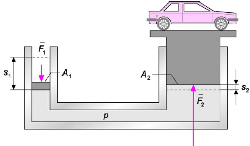

Hydrostatiikkaa
Contents
Hydrostatiikkaa#
Hydrostatiikassa tutkitaan paikallaan olevia nesteitä ja kaasuja. Paine ja noste ovat tähän tieteenalaan liittyviä tuttuja käsitteitä. Jokaisella lienee jonkinlainen näkemys siitä, miltä tuntuu pieni tai suuri paine. Pystymme myös intuitiivisesti arvioimaan, millaiset esineet kelluvat ja millaiset eivät. Perehdytään tässä määritelmiin ja laskukaavoihin, jolla näitä asioita voidaan käsitellä hieman tarkemmin.
Paine#
Paine \(p\) on tietylle pinta-alalle \(A\) kohdistuva voima \(F\) jaettuna kyseisellä pinta-alalla:
\(p=\frac{F}{A}\).
Jos voima kohdistuu kaltevalle (kaltevuuskulma \(\alpha\)) tasolle, niin voimasta huomioidaan tasoa vastaan kohtisuora osuus \(F \cos{\alpha}\), jolloin siis
\(p=\frac{F \cos{\alpha}}{A}\).
Paineen yksikköä \(\frac{\text{N}}{\text{m}^2}\) merkitään lyhyemmin Pa (Pascal).
Voima on usein kappaleen oma painovoima, siis \(F=mg\). Massan \(m\) voi ilmaista myös aineen tiheyden \(\rho\) ja tilavuuden \(V\) avulla, \(m=\rho V\).
Ilma aiheuttaa paineen kaikkialle ympärillemme. Normaali ilmanpaine on noin 101.3 kPa. Muita yleisesti käytettyjä yksiköitä ovat 1 bar = 100 000 Pa, 1 atm = 1.013 bar ja 1 mmHg =1/760 atm. Painetta aiheutuu tietenkin myös esim. veden alla vedestä, ja rakennuksissa rakennusmateriaalista itsestään.
Esim. Laske 10 m korkean tiiliseinän alimpaan kerrokseen kohdistuva paine. Tiilien tiheys on \(\rho=1400 \frac{\text{kg}}{\text{m}^3}\).
Ratkaisu
Tarkastellaan painetta pinta-alalla \(A\). Tämän alueen yläpuolella olevien tiilien paino on \(mg=\rho Vg\), missä \(V\) on tiilikerroksen tilavuus. Tilavuus \(V\) on tarkasteltava pinta-ala \(A\) kerrottuna tiilikerroksen korkeudella \(h\):
\(mg=\rho A h g\)
Siispä paine on \(\frac{mg}{A}=\frac{\rho A h g}{A}= \rho h g = 1400 \frac{\text{kg}}{\text{m}^3}\cdot 9.81 \frac{\text{m}}{s^2} \cdot 10~\text{m} = 137.3~\text{kPa}\).
Esimerkin mukaisella tavalla määritetään paine myös vesi- tai muiden nestekerroksien alla. Tarkastellaan veden alla olevaa pinta-alaa \(A\), jonka päällä on korkeudeltaan \(h\) kerros vettä.
Alueelle \(A\) kohdistuva voima on veden paino: \(F=mg=\rho V g=\rho A h g\)
Paine on voima jaettuna pinta-alalla: \(p=\frac{F}{A}=\frac{\rho A h g}{A}\), joka sievenee muotoon \(p=\rho h g\).
Esim. Paljonko on veden aiheuttama paine Mariaanien haudassa 10920 m syvyydessä? Suolaisen meriveden tiheys on \(1010 \frac{\text{kg}}{\text{m}^3}\).
Ratkaisu
\(p=1010 \frac{\text{kg}}{\text{m}^3}\cdot 9.81\frac{\text{m}}{\text{s}^2}\cdot 10920~\text{m}=108 192 452~\text{Pa} \approx 108~\text{MPa}\)
Veden allakin vaikuttaa lisäksi ilman paine. Kokonaispaineeseen tulee siis edellä lasketun paineen lisäksi noin 0.1 MPa ilmanpaine.
Noste ja Arkhimedeen laki#
Nesteessä (tai kaasussa) kappaleen ylä- ja alapintaan kohdistuu erisuuruinen paine. Yläpinnalta neste painaa kappaletta alaspäin, ja alapuolelta se nostaa kappaletta ylöspäin. Kappaleeseen esim. vedestä ylöspäin kohdistuva nettovoima, noste, on
\(F=A p_2 -A p_1 = A (p_2-p_2) = A(\rho g h_1 - \rho g h_2) = A \rho g (h_2-h_1) = \rho g A h = \rho gV\)
Siis jos kappale, jonka tilavuus on \(V\), on nesteessä (tai kaasussa) jonka tiheys on \(\rho\), niin siihen kohdistuvan nostevoiman suuruus on
\(F=\rho gV\)
Äskeinen tulos on nimeltään Arkhimedeen laki: “The net force acting on a body in a liquid is the same as the weight of the equal volume of liquid.”
Nosteen lisäksi kappaleeseen kohdistuu alaspäin painovoima \(-G=-mg\). Paino voi aiheutua pelkästään kappaleesta itsestään, tai sitten kappaleen päällä voi olla jotakin. Kappale kelluu, jos noste on suurempi kuin paino, siis jos \(F-G \geq 0\).
Esim. Sahattu hirsi on kooltaan 15 cm \(\times\) 20 cm \(\times\) 800 cm. Sen massa on 140 kg. Kuinka suuren kuorman se voi korkeintaan kantaa vedessä?
Ratkaisu
Merkitään hirren ja kuorman kokonaismassaa kirjaimella \(M\). Hirsi kelluu, kun kokonaisvoima on vähintään nolla, siis
\(F-G\geq 0\)
\(\rho g V-Mg \geq 0\)
\(M \leq \rho V = 1000 \frac{\text{kg}}{\text{m}^3}\cdot 0.15~\text{m}\cdot 0.20~\text{m} \cdot 8.00~\text{m}=240~\text{kg}\).
Kuormaa voi siis olla 240 kg – 140 kg = 100 kg.
Pascalin laki#
Pascalin laki on yksinkertainen: nesteeseen kohdistuva ulkoinen paine leviää tasaisesti kaikkialle nesteeseen. Pascalin lain käyttökelpoinen sovellus on hydraulinen nosturi. Sen taustalla on Pascalin lain lisäksi se tosiasia, että nesteet eivät juurikaan puristu kokoon.

Kun nestettä painetaan voimalla \(F_1\) männällä, jonka ala on \(A_1\), nesteeseen kohdistuu paine \(p=\frac{F_1}{A_1}\). Pascalin lain mukaisesti sama paine työntää ylöspäin toista mäntää, jonka ala on \(A_2\). Koska paine on sama, niin toiseen mäntään kohdistuva voima on \(F_2=p A_2 = \frac{F_1}{A_1} A_2\). Tämä voidaan ilmaista myös muodossa \(\frac{F_1}{A_1}=\frac{F_2}{A_2}\)
Painettavan ja nostavan männän liikkumat matkan ovat myös yhteydessä toisiinsa. Kun pientä mäntää liikutetaan voimalla \(F_1\) matka \(s_1\), siihen tehdään työ \(W=F_1 s_1\). Isompi mäntä tekee samalla yhtä suuren työn \(F_2 s_2\). Niinpä tarvittaessa voidaan myös laskea, kuinka paljon pienempää mäntää pitää työntää alaspäin, jotta isompi mäntä saadaan nousemaan halutun matkan, esimerkiksi nostamaan kuormaa tietylle korkeudelle.
Esim. Kuinka suurella voimalla saadaan 800-kiloinen auto nousemaan, kun nostavan männän pinta-ala on 3 neliömetriä ja painettavan männän pinta-ala on 0.5 neliömetriä?
Ratkaisu
Ratkaistaan yhtälöstä \(\frac{F_1}{A_1}=\frac{F_2}{A_2}\) kysytty voima \(F_1\) ja sijoitetaan siihen tunnetut suureet: \(F_2=800~\text{kg}\cdot 9.81\frac{\text{m}}{\text{s}^2}, A_1=0.5~\text{m}^2, A_2=3~\text{m}^2\).
\(F_1=F_2 \frac{A_1}{A_2} = 800~\text{kg}\cdot 9.81 \frac{\text{m}}{\text{s}^2} \cdot \frac{0.5~\text{m}^2}{3~\text{m}^2}=1.3~\text{kN}\)